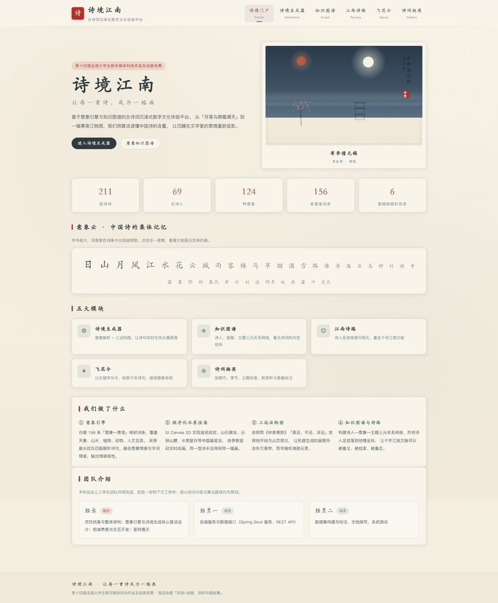
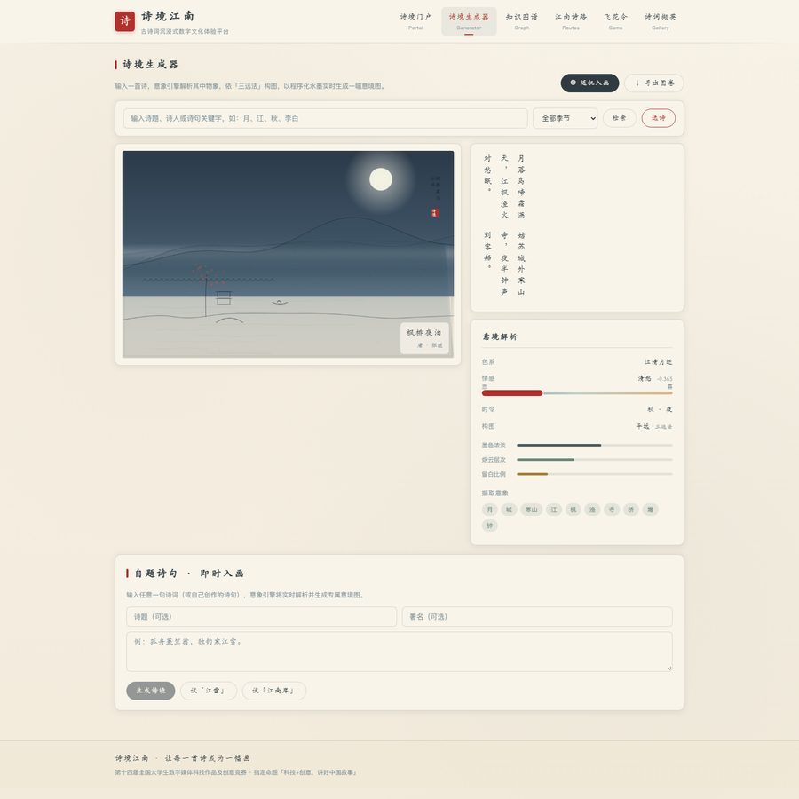
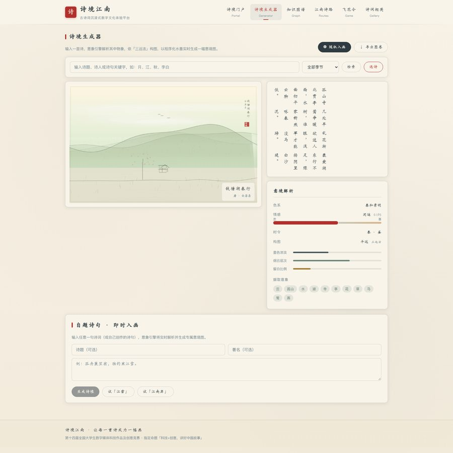
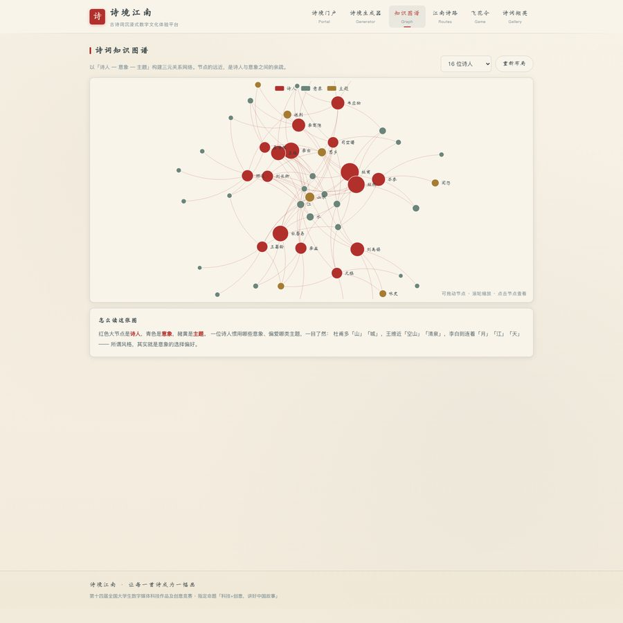
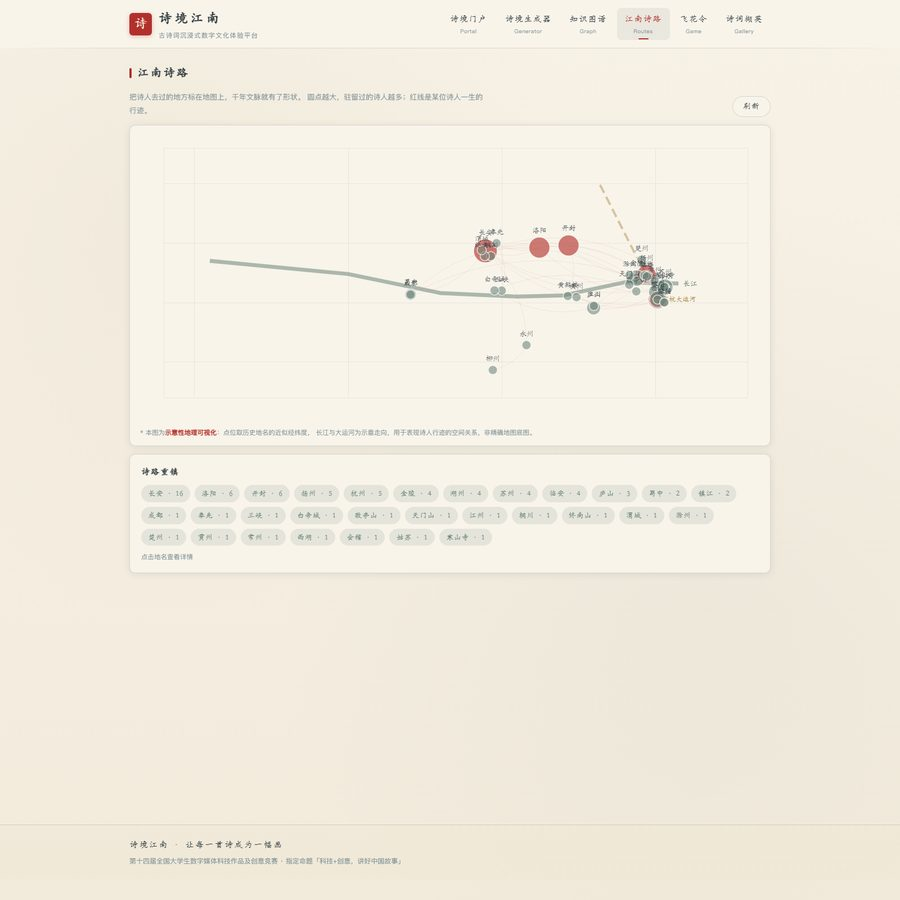
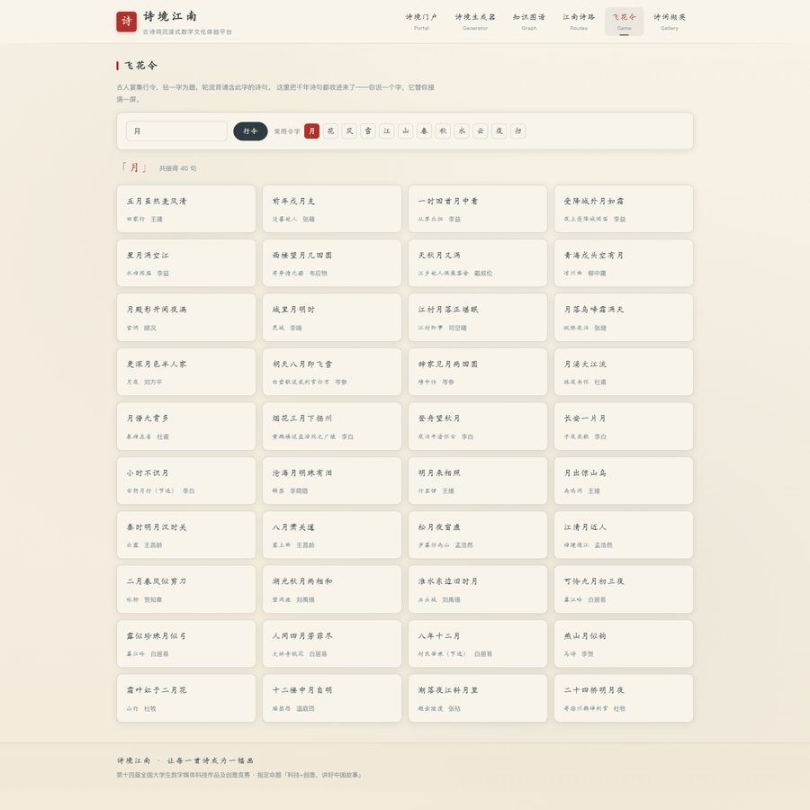
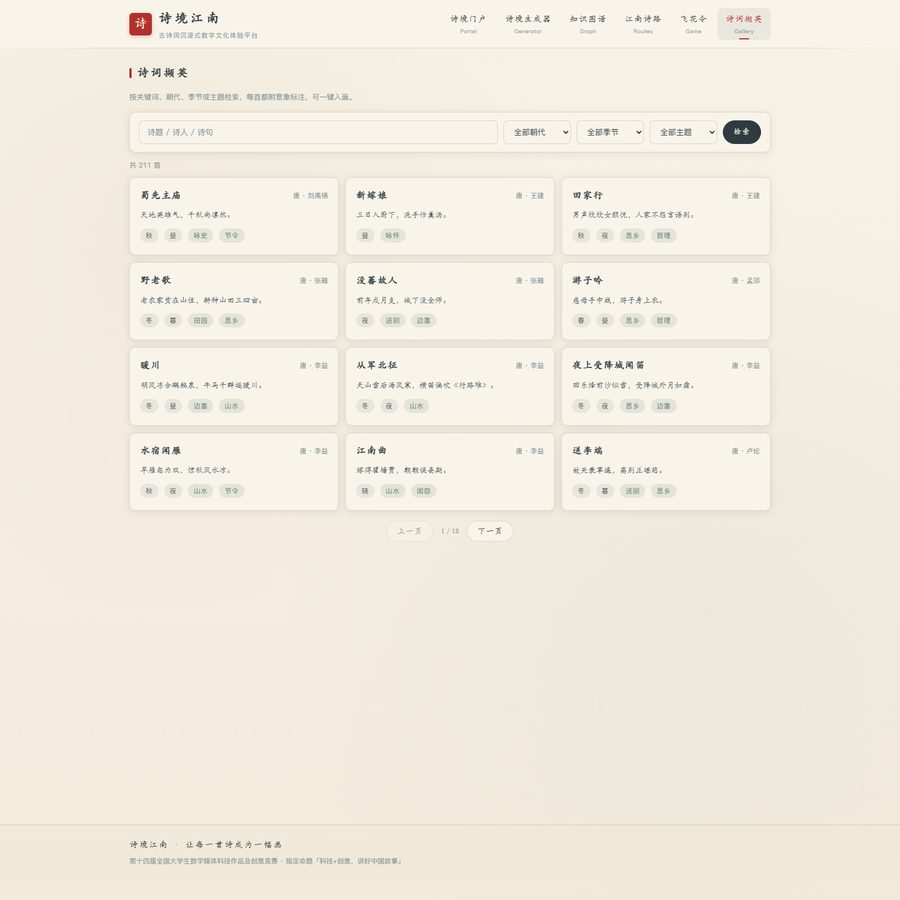

让算法读懂中国诗的含蓄，并把读到的意境画出来。输入一首诗，系统解析意象、推导情感与时节，用 Canvas 实时绘制一幅水墨意境图——同诗同画，可复现、可验证。







古诗词在当代传播中卡在三个地方：一是文字与意境之间隔着门槛，"月落乌啼霜满天"对不熟悉古典审美的人来说只是要背的句子，不是能看见的画；二是现有产品大多停留在查诗、背诗，交互单薄；三是常见的"诗词可视化"只是给每首诗配一张固定古画，图与诗之间没有生成关系。
作品回到中国古典美学本身找算法依据——诗讲究"以象写意"，情感不直说而托付于月、江、柳、雁这些物象。既然诗人用意象写情，那反过来，也可以从意象还原情境。
156 条手工词条，覆盖天象、山水、植物、动物、人文五类。每条带情感极性、远近层次与绘制类型，"孤舟"与"扁舟"仅一字之差，权重相差 0.25。
不拼素材、不用图像模型。宣纸纤维、山石皴法、墨分五色、烟云遮断全部由 Canvas 2D 实时计算生成。
依据郭熙《林泉高致》的高远、平远、深远判定构图，让机器生成的画面符合东方观看习惯，而非随机堆砌。
画面由诗句哈希作 seed 驱动伪随机，同一首诗永远得到同一幅画，评审可当场输入验证一致性。
意象抽取采用最长优先匹配，避免"明月"被拆成"明"+"月"；情感极性由意象情感（权重 0.6）与字词情感（权重 0.4）融合，映射为孤寂、清愁、微茫、中和、闲适、明快、旷达七级情绪；墨色浓淡、烟云层次、留白比例均由情绪与水系意象推导。
2026 年第十四届全国大学生数字媒体科技作品及创意竞赛 · 指定命题「科技+创意，讲好中国故事」。团队 3 人，本人担任组长，负责整体架构、意象引擎与诗境生成核心算法、前端界面开发及答辩展示。